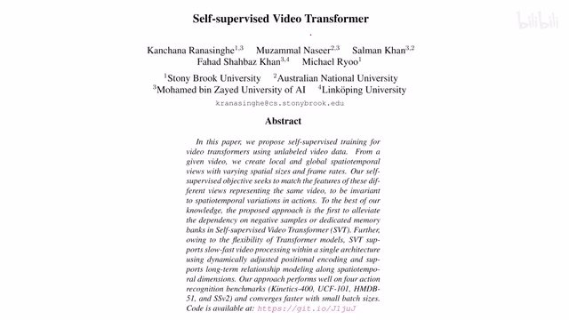
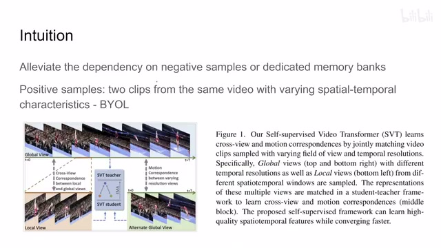
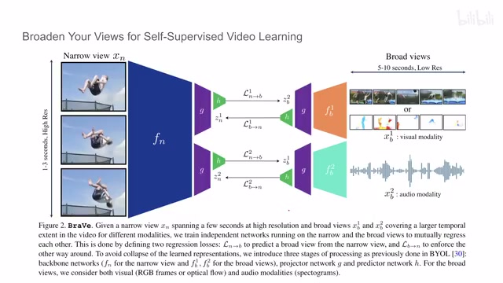
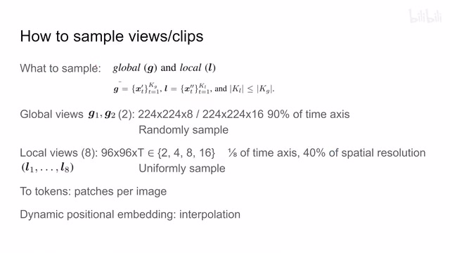
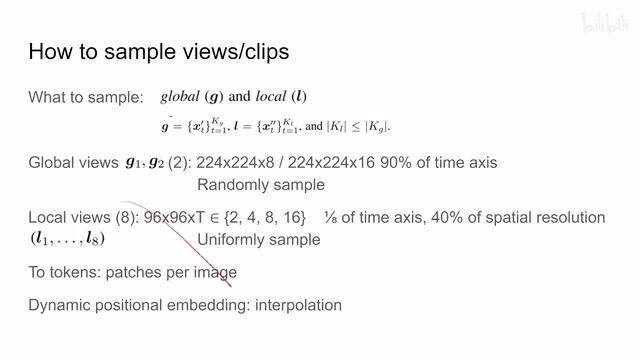
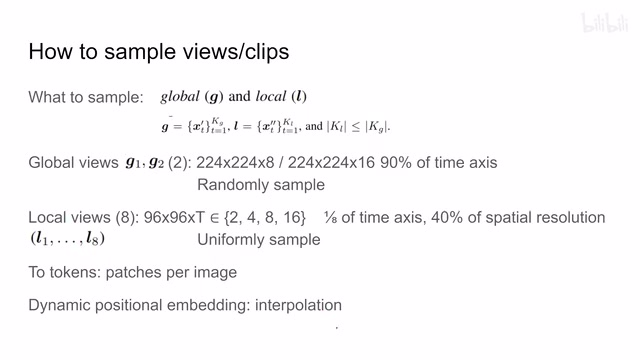
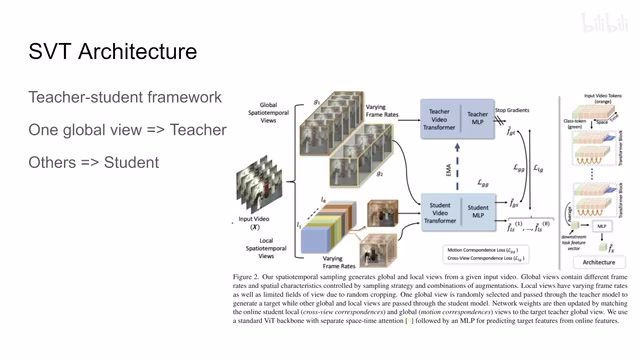
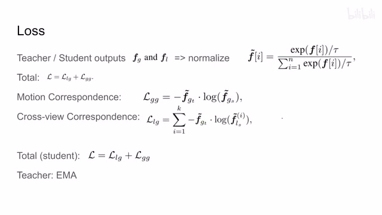
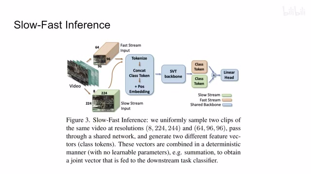

← 返回阅读库 · 原论文目录
论文讲解阅读文档 · 表征学习 · v204
Self-supervised Video Transformer[2112.01514]
视频时长 00:07:08；讲解文字 3,493 字符；提取讲解画面 10 张。按视频原顺序阅读，每段文字保留时间戳。
文字来自整段视频的自动语音转写，按自然停顿分段，并与 PPT / 论文页面 / 演示画面对齐。未将讲解压缩为摘要；术语、数字和口述公式请结合画面及原论文核对。 阅读稿已校正规范部分明确术语误识别；原始逐字稿和每处修改记录另行保留。
讲解画面为源视频截图（640×360），不是可编辑 PPT 文件。全片按每秒 2 帧扫描内容变化，逐步展开页保留；连续动画保留代表画面。清晰度受源视频限制。
下载完整资料包 · 含离线 HTML、PDF、Word、全部 PPT 画面和字幕。
原论文与材料
Self-supervised Video Transformer · 下载完整 PDF（13 页）
按时间阅读
00:00:00–00:00:21 · 画面 001

00:00:00–00:00:21 · 画面 001大家好,今天我们来快速数一篇论文 Self-supervised Video Transformer，这篇本质上来讲也是一个填空题性质的，就是把我们之前的各种成熟的技术结合起来，然后把没有人做的空白的方向填一填，如果你从事这个方向的研究或者需要这个方向的应用，可以参考一下它们的实现，首先一个 Intuition，之前我们介绍了各种在基于图像的 Contrastive Learning 的方法
00:00:21–00:02:09 · 画面 002

00:00:21–00:02:09 · 画面 002之前我们介绍了各种关于图像的 contrastive learning 的方法其实比如说 Moco 它需要负样本，负样本来自大的 Memory Bank，这就导致诸多不便，虽然它后面的版本也已经取消了这些东西了，那么这篇文章当然也可以名正言顺的说 OK，我们是不希望用 Negative Sample，因为它需要大的 Batch Size，不需要用专门的 Memory Bank 等等这类的东西，这都是一个 Contrastive Learning 里面的一个通用的目标，那么在此基础上一个方法区别于另一个方法的重点
一个就是你 loss 该怎么构建，也就是我们说的要不要用负样本，或者说你怎么样衡量两个 representation 之间它们的距离，两个 sample 之间它们的距离，更重要的一个方向就是我怎么样确定 positive sample，具体来说就是什么样的两个样本它们应该相互靠近或者相互远离，比如说我们之前聊过 with a little bit help from my friend 就是 NNCLR，那么这个是这个方向在图片领域你能做的比较有限，因为无论如何做都是一张图像，但是你来到视频领域情况就很多样了，因为这个视频它是一连串的图像，而且引入了时间的概念，有的时间自然就是快慢等等一系列的各种变化，所以它跟空间相互组合能够产生很多种辨识，你就可以根据这些不同的组合这些辨识去提出一种你认为合理的构建正负样本的方案
那么回到这篇论文本身，整个论文的构架是参考 BYOL，然后它的 positive sample 全部是来自于一个视频中的各个的片段，就是你一个长的直播切片，然后相互做相似这样子的一个设计
00:02:09–00:02:28 · 画面 003

00:02:09–00:02:28 · 画面 003这篇文章其实跟我们之前介绍的 Brave 这篇很像，其实它都是通过 Global 还有 Local View 这些东西来自一个视频中的不同 View，他们 Consistent 这样的一个约束来做的，所以我说这更像是一个填空题，他把这个 Cone 给它填上了，但是无论如何我们具体来看人家采样要采出来的是 Views 或者 Clips，在这篇文章里面两个词是等效的
00:02:28–00:03:40 · 画面 004

00:02:28–00:03:40 · 画面 004看踩了什么吧，一个 global，一个 local，对于 global 来说呢，它是踩了一个 224x224 的，覆盖了呢 90%的这个时间尺度，在这个 90%的时间尺度里面它有很多帧嘛，它随机的抽出了这个 8 帧或者是 16 帧，构成了这个是两个 global views，那至于 local views 呢，首先它要踩 8 个，然后呢每一个都是 96x96 的这么一个像素，然后这个小的视频的长度呢从 2 到 16 不等那注意这个采样的范围呢，它只覆盖了 1%的时间轴，同时呢它只覆盖了 40%的空间分辨率，也就是说它就是一个大的视频中一个小的 tube，采的就是一个区域里面的样本，那既然现在我们有了一圈视频，后面模型是 transformer 怎么办呢，做个 token 吧，那这里做着采样的方法还是视频中的每一张图像都画成这个一个个 token 一个个 token
然后大家串起来就一大串 tokens 就做好了，那 positional embedding 呢作者用的是这个 dynamic，也就是也是一个 learnable 的，就是可学习的这么一个 vector，但是当我们需要产生中间的某个 embedding 的时候呢，我们直接用插值的方法把这个 embedding 给它插值出来，这个呢是基本的一个设计
00:03:40–00:03:41 · 画面 005

00:03:40–00:03:41 · 画面 00500:03:41–00:03:46 · 画面 006

00:03:41–00:03:46 · 画面 006我们来看具体怎么学习的，这里作者用的是一个 teacher student framework，它虽然是叫这个 framework，但本质上还是一个 BYOL 的一个东西，teacher 就是用 EMA 更新，不用梯度更新的这么一个 target network 也好，对吧？EMA network 也好，就是这个东西，它是为了提供一个相对稳定的一个 target，后面这个 student network 就是我们在线的正在训练的用梯度来更新的这么一个网络，这两个网络结构是一样的，然后对吧？EMA
00:03:46–00:05:19 · 画面 007

00:03:46–00:05:19 · 画面 007通过加权平均的方式把参数更新一下，这里作者把一个 global view 送到 teacher network 里面作为我们的 target，同时其他的 local view 包括另一个 global view 就送到 student network 里面然后他们就开始计算 loss，把 student 向这个 teacher 靠拢就可以了，这里还是要说一下，因为我们的 teacher 这里没有梯度，所以这里是在把所有 student network 的输出全部向 teacher network 靠拢，因为我们 student network 它其实是拿着两种数据，一种是 local，一种是 global，对于 student global 和我们 teacher global 来对比来说，它其实就相当于一个视频的两种不同 augmentation，这是一个 instance level 的这么一个 contrastive learning
而对于 teacher 的 global 和 student 的 local 来说，它其实相当于把我们 student 的一个小的一个个的 tube 给它拉向我们的整个视频的这么一个聚类的中心，有点像聚类的意思，它就更细化到 instance level 更低一层更细化一层的这么一层聚类的方法，它的这种思想其实就跟我们之前刚刚介绍的 extreme ma 它就是很像了，然后我们来看具体的 loss 实现，首先是各种 feature
00:05:19–00:06:33 · 画面 008

00:05:19–00:06:33 · 画面 008feature 你从 student 和 teacher network 拿到之后呢，这里呢作者做了一个 soft 这个 normalization，假如说我们这个 feature 原来出来是一个 vector 嘛，对吧？那这个 fi 呢就是这个 vector 里面的每一个这个元素，你可以看到他做了一个类似于 softmax 的东西，然后再看 lossloss 分两种部分一种是 Global 和 Global那就是我们之前所说的这里呢作者把 Global 对 Global叫做 Motion Correspondence
因为除了我们之前说的两个这个 Global View 的这个 Data Augmentation 是不一样的同时呢很重要的一点就是我们之前提过Global View 的产生呢是通过随机的在这个时间轴里面抓针产生的因此呢这等效于两个视频的播放速度是不一样的两个速度不一样的视频呢它们要 Match 在一起这个叫做 Motion Correspondence那后面这个 Cross View Correspondence 呢就是我把小的这个Local 的这个 View给拉向我们这个Global View 的 Representation
是这个样子那这个时候有朋友说为什么它不是 Motion Correspondence 呢对吧它不应该也有这个 Motion 的信息吗那这是因为当我们采集这个小的这个 Local View 的时候呢它是均匀的在这个视频中采样的它并不涉及播放速度的变化那么这样就是这两个 Loss直接把这两个 Loss 加起来就是本文的这个核心的 Loss
00:06:33–00:07:08 · 画面 009
00:06:33–00:07:08 · 画面 009那么当然后面作者还说我们的网络可以兼容这个 Slow Fast Inference也就是说我们的这个Slow 的这一帧它是这个高分辨率低帧率的Fast 这一帧是低分辨率高帧率的，他们都打成 token，都串在一起，直接送到网络里面，也甭管谁跟谁的，都是一串 token，对吧，直接做就可以了，这个就是本文的实现的方法，感兴趣的朋友非常推荐引导原文查看，有很多的实验，包括作者的代码也更新了，马上 CVPR 要开，你也可以去看他的视频，好的，那么以上就是我对这篇论文的一个快速的整理，感谢您的收看，再见
00:07:08–00:07:08 · 画面 010

00:07:08–00:07:08 · 画面 010转写与来源说明 · 25 个自动复核提示
保留 63 个原始语音片段，25 个片段触发自动复核提示。提示仅用于定位可能的术语、重复或识别问题，不等于已确认错误。
讲解画面为源视频截图（640×360），不是可编辑 PPT 文件。全片按每秒 2 帧扫描内容变化，逐步展开页保留；连续动画保留代表画面。清晰度受源视频限制。
原视频：paper/合集_2026-10-16_表征学习/[论文速览]Self-supervised Video Transformer[2112.01514].mp4
SHA-256：fbeba9f8ee29bf7e19df078b6e95ba55034479345a0889b0b5d417693fed9bb6
一种是 Global 和 Global
那就是我们之前所说的
这里呢
作者把 Global 对 Global
叫做 Motion Correspondence
因为除了我们之前说的
两个这个 Global View 的
这个 Data Augmentation 是不一样的
同时呢
很重要的一点就是
我们之前提过
Global View 的产生呢
是通过随机的
在这个时间轴里面抓针产生的
因此呢
这等效于两个视频的
播放速度是不一样的
两个速度不一样的视频呢
它们要 Match 在一起
这个叫做 Motion Correspondence
那后面这个 Cross View Correspondence 呢
就是我把小的这个
Local 的这个 View
Global View 的 Representation
这个 Slow Fast Inference
全文按视频语音与画面制作。原论文可从上方链接下载；完整资料包保留全文、原始逐字稿、字幕和校对记录。